【仿真】案例1-加工车间模型
条评论本案例展示如何使用Anylogic中的流程建模库来创建离散事件模型。该案例的目标是创建一个离散事件模型来模拟小型加工车间的制造及运输流程。该流程会将接收的原材料被放到货架，并模拟在CNC机器上进行加工。本案例取自Ilya Grigoryev的《AnyLogic in Three Days》一书。
1.1创建一个简单的模型
首先创建一个简单的模型来模拟托盘到达加工车间，并通过叉车进行存储。这里将使用以下图片作为布局，在Anylogic安装文件夹中的\resources\AnyLogic in 3 days\Job Shop中可以找到该图。
1、创建新模型，设置“模型名”为“加工车间模型”、“模型时间单位”为“分钟”。
2、打开演示面板，有几种形状可用于绘制动画：矩形、直线、椭圆、折线和曲线。
3、在演示面板上选择图像将其拖到图形编辑器上。该元素可以将多种图形格式的图像（包括PNG、JPEG、GIF和BMP）添加到演示中。
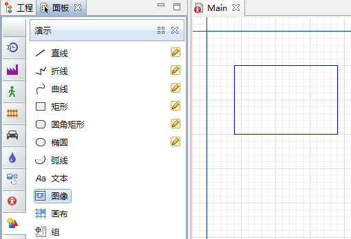
4、将看到选择图像文件的对话框。浏览到之前保存的图像文件的位置。选择layout.png图像后，Main智能体类型图如下图所示：
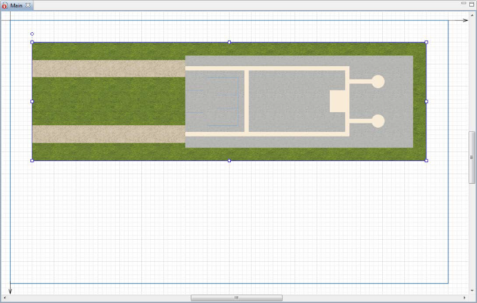
AnyLogic将原始大小的图像添加到Main图上，但也可以更改图像的“宽度”或“长度”。如果图像比例发生了扭曲（如下图所示），可以通过打开属性视图并单击“重置到原始大小”来还原到图像的原始大小。
6、在图形编辑器中选择图像，然后在属性视图中选中“锁定”以锁定图像。
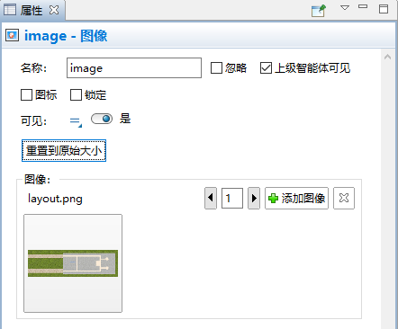
锁定形状
•可以锁定形状以确保它不响应鼠标的单击，且无法在图形编辑器中选择它。如果在工厂或医院等设施的布局上绘制形状时，这个功能会非常有用。
•如果需解锁形状请在图形编辑器中单击鼠标右键，然后从菜单中选择“解锁所有形状”。
空间标记元素
下一步是使用空间标记面板将空间标记形状放置在作业车间的布局上。空间标记面板包括路径、三种节点、吸引子和托盘货架等元素。
创建一个网络
路径和节点是定义智能体位置的空间标记元素：
•节点是智能体驻留或执行操作的位置。
•路径是智能体用于在节点之间移动的路线。
节点和路径一起组成网络，智能体可以使用它来沿着它们的起始节点和目标节点间的最短路径移动。当模型的流程发生在定义的物理空间中并且它具有移动智能体和资源时，通常会创建一个网络。假设网络具有无限容量，且智能体不会相互干扰。现在可以创建一个网络来定义模型托盘的移动路径。第一步是使用矩形节点来定义作业车间布局上的特定区域。在作业车间入口处绘制矩形节点，如下图所示，以表示托盘的接收平台。
7、打开空间标记面板将矩形节点拖到Main图上，调整节点大小，应如下图所示。
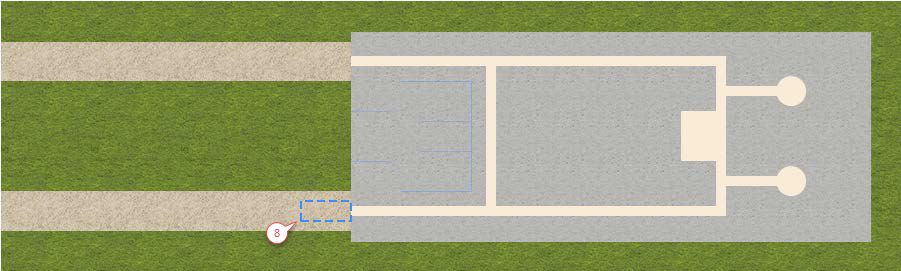
8、命名创建的节点为receiveDock。
9、绘制另一个节点代表叉车闲置或智能体群不需要叉车时将停放的位置。使用另一矩形节点绘制停车区域如下图所示，然后将其命名为forkliftParking。
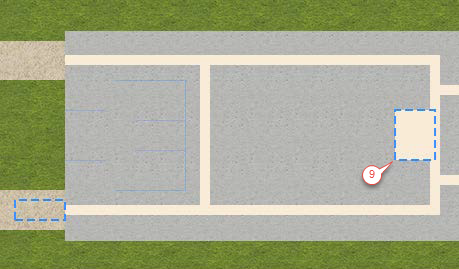
画一条运动路径来指导模型中的叉车。
10、执行以下操作，绘制一条引导模型叉车的运动路径：
a.在空间标记面板中双击路径以激活其绘图模式。
b.通过单击receivingDock节点的边框绘制如下图所示的路径，单击图以添加路径的转折点，然后单击forkliftParking节点的边框。
如果已成功连接节点，每次选择路径时路径的连接点将以青色高亮显示。
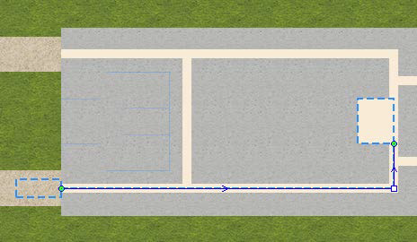
默认路径是双向的。但是可以通过清除“双向”属性将路径的移动限制为一个方向。可以通过选择路径然后查看图形编辑器中显示的方向箭头来查看给定路径的方向。
11、从空间标记面板将托盘货架拖到布局上并将其过道放在路径上来定义模型的仓库存储。正确放置的托盘货架将显示绿色突出显示，表明它已连接到网络。
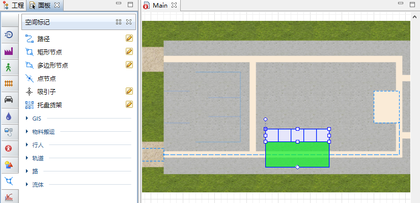
托盘货架
托盘货架以图形方式表示经常在仓库和存储区域中看到的托盘货架。如下所示，该元素有三种配置。
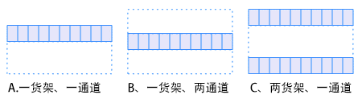
在运行期间，托盘货架管理存储在过道侧面可用的单层或多层单元格中的智能体。
12、在托盘货架的属性设置如下：
a.类型：两货架，一通道
b单元格数量：10
c.层高：10
在位置和大小部分：
a.长度：160
b.左侧托盘货架深度：14
c.右侧托盘货架深度：14
d.通道宽度：11
13、完成这些更改后，托盘货架应形如下图所示。如有必要移动托盘货架，使其中心通道位于路径上。通过单击托盘货架两次来确保托盘货架连接到网络以进行选择。第一次单击将选择整个网络，第二次将选择托盘货架。托盘货架应显示为绿色，表明它已连接到网络。
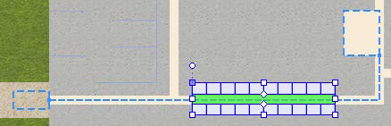
通过在布局上绘制重要的位置和路径来标记模型空间，现在将使用AnyLogic流程建模库来为相关流程进行建模。
流程建模库
流程建模库中的模块允许使用智能体、资源和流程的组合来创建实际系统中以流程为中心的模型。可在本节前了解一下智能体和资源，我们将通过将流程定义为包含队列、延迟和资源利用率的操作序列来构建该流程。
模型流程由流程图定义，它是用流程建模库模块构建的图形。通过以下步骤创建流程图。
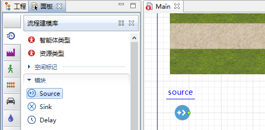
14、从流程建模库面板将Source模块拖到图上，并命名为sourcePallets。Source模块通常充当流程起点，模型将使用它来生成托盘。
15、在sourcePallets模块的属性中，执行以下操作以确保模型的托盘每五分钟到达一次并出现在receivingDock节点中。
a.“定义到达通过”指定为“间隔时间”。
b.“间隔时间”中输入5，然后在右侧选择分钟，让托盘每五分钟到达一次。
c.“到达位置”中选择“网络/GIS节点”。
d.“节点”中选择“receivingDock”节点。
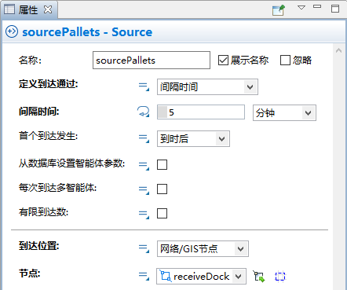
如何在模块的参数中引用模型元素
模块的参数提供了两种选择图形元素的方法：
•可以从参数旁边显示的可用元素列表中选择图形元素。
•也可以通过单击列表旁边显示的选择按钮来选择图形元素。如果单击选择按钮，只能选择可用的元素：
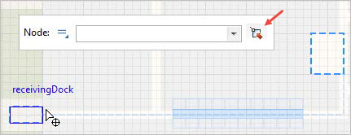
通过添加其他流程建模库模块继续构建流程图。
16、从流程建模库面板将RackStore模块拖到图上，并将其放在sourcePallets模块附近，以便它们自动连接，如下图所示。RackStore模块将托盘放入给定的托盘货架单元中。
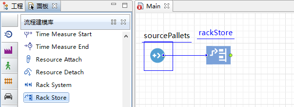
17、修改rackStore模块的属性如下：
a.在“名称”中输入storeRawMaterial。
b.在“托盘货架/货架系统”中选择palletRack。
c.在“智能体位置（队列）”中选择“receivingDock”指定智能体等待存储的位置。
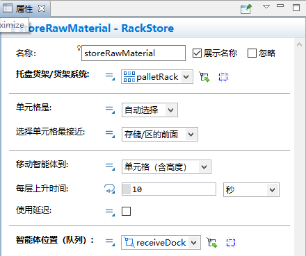
18、添加Delay模块以模拟托盘在托架中的等待，并重命名为rawMaterialInStorage。
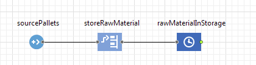
可能已经注意到AnyLogic会自动将模块的右端口连接到下个模块的左端口。每个流程建模库模块都有一个左输入端口和一个右输出端口，但是只应将输入端口连接到输出端口。
19、在rawMaterialInStorage模块的属性视图中执行以下操作：
a.在“延迟时间”中输入triangular(15,20,30)并从列表中选择分钟。
b.选中“最大容量”以确保智能体在等待从货架中获取时不会卡住。
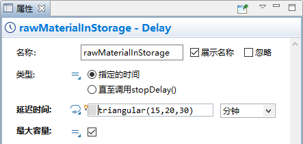
20、添加RackPick模块将其连接到流程图并命名为pickRawMaterial。该模块将从托盘货架中的单元中选择托盘，然后将其移动到指定目的地。
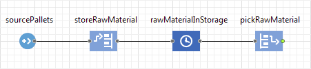
21、在pickRawMaterial模块的属性视图中执行以下操作：
a.在“托盘货架/货架系统”中选择“palletRack”。
b.在“节点”中选择“forkliftParking”以指定停放叉车的位置。
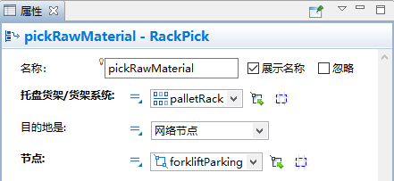
22、添加一个Sink模块。Sink模块用于处理智能体，通常是流程图的终点。
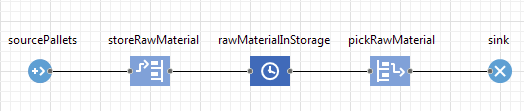
23、这样就完成了这个简单模型的构建，现在可以运行它并观察它的行为。单击工具栏中的运行，然后从下拉列表中选择要运行的实验，实验名称为Job Shop / Simulation。
24、你会看到模型窗口。单击窗口底部显示的控制面板中的运行按钮。
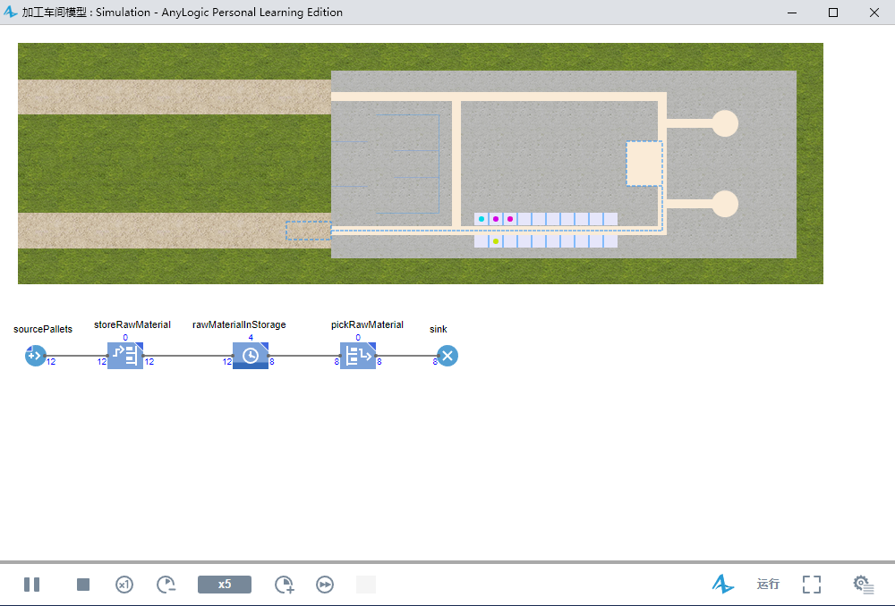
如果出现离散事件执行错误消息，则必须将托盘货架连接到网络。应在图中选择托盘货架，移动它直到托盘货架的过道以绿色突出显示，表示已连接到网络，然后重新运行模型。
1.2添加资源
继续开发模型，增加资源、叉车、将托盘存放在托盘货架中，然后将其移动到生产区域。
资源
资源是智能体执行指定操作的对象。智能体必须获取资源、执行操作、然后释放资源。
一些资源示例包括：
•医院模型的医生、护士、设备和轮椅
•供应链模型的车辆和集装箱
•仓库模型的叉车和工人
有三种类型的资源：静态、移动和可携带。
•静态资源绑定到特定位置，无法移动。
•移动资源可以独立移动。
•可携带资源可以通过智能体或移动资源来移动。
AnyLogic中流程建模库的ResourcePool模块定义了每个资源集或资源池。资源单元可以具有单独的属性，每个资源都有一个图，可以在其中添加状态图、参数和函数等元素。
模型中的资源将托盘从卸载区移动到托盘货架，然后将托盘从货架运送到生产区的叉车。
1、将流程建模库面板中的 ResourcePool模块拖到Main图上，不必将模块连接到流程图。
2、将模块命名为forklifts。
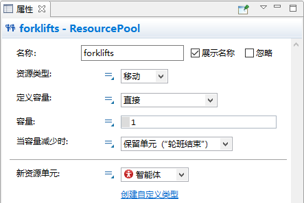
3、在forklifts模块的属性视图中，单击“创建自定义类型”按钮。这样就可以创建一种新类型的资源。
4、在新智能体向导中：
a.在“新类型名”中输入ForkliftTruck。
b.单击下一步。
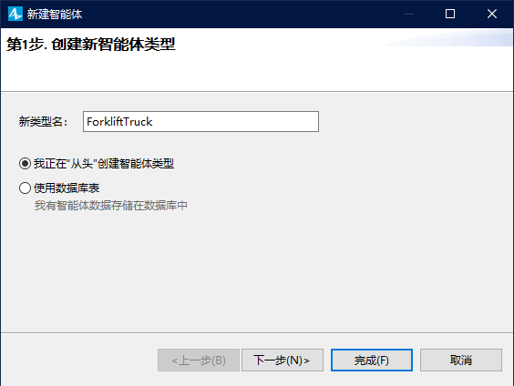
c.在下一页的向导左侧列表中，展开仓库和集装箱码头部分选择“叉车”。
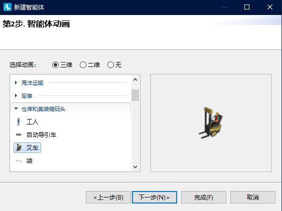
d.单击“完成”。
5、单击Main选项卡打开Main图。
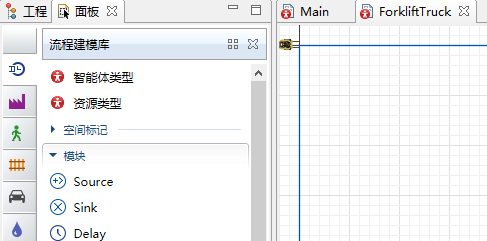
将看到已在ResourcePool模块的“新资源单元”中选择了“ForkliftTruck”资源类型。
6、修改叉车资源类型的其他参数：
a.在“容量”中输入5以设置模型中的叉车数量。
b.在“速度”中输入1并从右侧选择“米每秒”。
c.在“归属地位置（节点）”中选择“forkliftParking”节点。
单击按钮，然后单击列表中的forkliftParking。
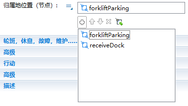
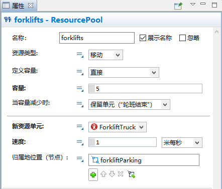
这样就已经定义了资源，但是仍然需要确保模型的流程图模块在模拟过程中使用它们。
7、在storeRawMaterial模块的属性视图中执行以下操作：
a.单击箭头以展开资源部分。
b.选中“使用资源移动”。
c.在“资源集（替代）”中，选择叉车以确保流程图模块使用所选资源（在示例中为叉车）来移动智能体。单击按钮，然后单击模型资源列表中的叉车。
d.选中“以资源速度移动”。
e.在“移动资源”中选择“forklifts”以使智能体按照叉车的速度移动。
f.在“返回归属地”中选择“如果无其他任务”确保叉车在完成任务后返回其原位。
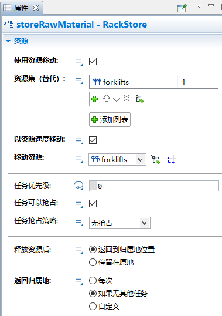
8、在pickRawMaterial模块的属性视图中，执行以下操作：
a.单击箭头以展开资源部分。
b.选中“使用资源移动”。
c.“资源集（替代）”选择“forlifts”以确保流程图模块使用叉车移动智能体。
d.选中“以资源速度移动”。
e.“移动资源”选择“forlifts”以使智能体按照叉车的速度移动。
f.“返回归属地”选择“如果无其他任务”确保叉车在完成任务后返回其原位。
如果模型资源移动智能体，RackStore或RackPick模块会占用它们，带到智能体位置，附到智能体上，将智能体移动到单元，然后释放资源。
9、运行模型。
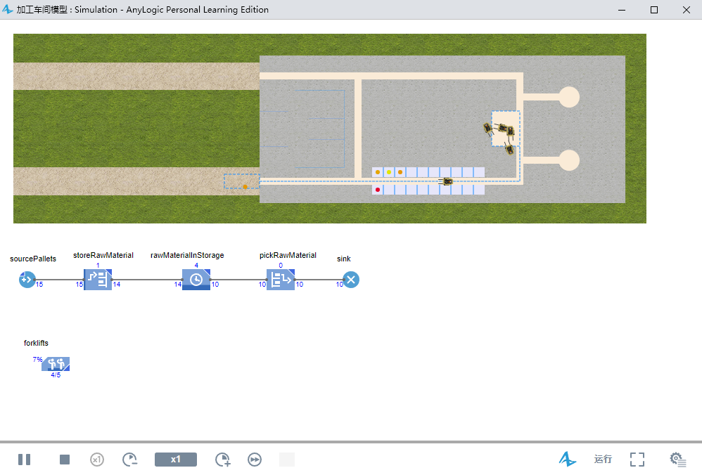
将会看到叉车拿起托盘并将它们存放在托盘货架中。在短暂的延迟之后将托盘移动到叉车停放区域，那里托盘将消失。
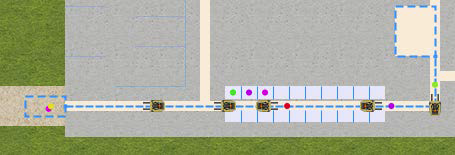
1.3创建3D动画
现在已经看到了许多强大的功能，但是还有很多其他功能你没有碰过的，其中非常特别的是3D动画。
介绍相机对象
AnyLogic的相机对象允许定义在三维窗口中显示的视图。本质上相机对象用于拍摄看到的图片。还可以创建多个相机对象以显示同一3D场景的不同区域，或从不同的视点显示单个对象。如果使用多个摄像头对象，则可以在运行时轻松地从一个视图切换到另一个视图。
1、在)演示面板上将摄像机拖到Main图上，使其面向作业车间布局。
2、将三维窗口拖到Main图上，然后将其放在流程图下面。
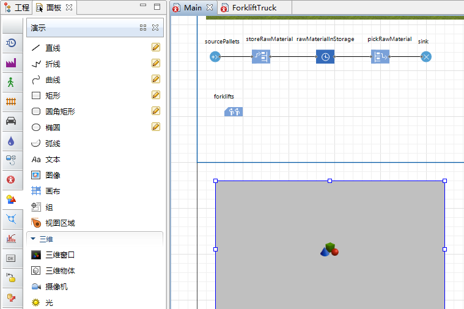
三维窗口
除了可以选择在模型中添加多个摄像头之外，还可以添加多个三维窗口，每个窗口从不同的视角显示相同的3D场景。
3、让摄像头拍摄三维窗口的图片。在三维窗口的属性视图中的“摄像机”选择“camera”。
4、“导航类型”选择“限制Z在0以上”，防止相机从地板下拍摄图像。
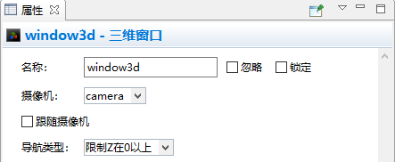
5、运行模型。
创建三维窗口时，AnyLogic会添加一个视图区域，使您可以在运行时轻松导航到3D视图。要在模型运行时切换到此3D视图，请通过单击控制面板右上角的 开发人员面板控件打开开发人员面板。在开发人员面板中从列表中选择[window3d]。
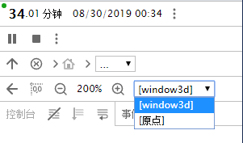
6、视图区域将3D动画场景扩展为模型窗口的完整大小。
执行以下一项或多项操作以在运行时以3D方式导航：
a.要向左、向右、向前或向后移动相机，请沿所选方向拖动鼠标。
b.要将摄像机移近或远离场景中心，请旋转鼠标滚轮。
c.要相对于摄像机旋转场景，请在按住ALT（Mac OS：Option键）和鼠标左键的同时拖动鼠标。
7、选择要在运行时显示的视图，在3D场景内右键单击（Mac OS：CTRL +单击），然后单击“复制摄像机位置”。
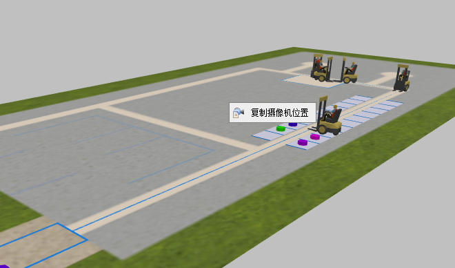
8、关闭模型窗口。
9、在摄像机的属性视图中，单击“从剪贴板粘贴坐标”，应用上步复制的摄像机位置。
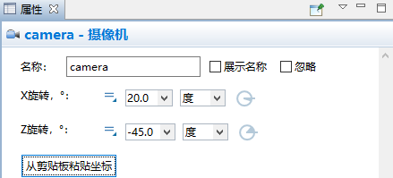
注意：如果找不到相机可以使用工程树。它将在Main的“演示”分支下显示为camera。
10、运行模型以从新摄像机位置查看3D视图，然后关闭模型窗口。
11、展开空间标记面板的行人部分，然后双击墙元素的图标以启用墙壁绘制模式。
12、执行以下操作在工作车间布局的工作区域周围绘制墙壁：
a.单击要在其中开始绘制墙的图形编辑器中的位置。
b.将指针移动到任意方向以绘制直线，然后在要更改方向的任何位置单击。
c.双击要停止绘制墙的点。
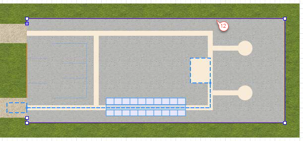
13、执行以下操作以更改墙的填充颜色和纹理：
a.在墙的属性视图中展开外观部分。
b.在“颜色”中选择其他颜色。
c.在颜色对话框中，从面板或光谱中选择要应用于墙的颜色。
还可以设置透明度级别（使用“颜色”对话框中的“透明度”滑块）或使用任何提供的纹理自定义墙（单击颜色菜单中的“纹理…”选项）。
本节使用了墙壁来装饰模型。在行人库的地铁模型中将看到墙壁也可以成为障碍物。
14、转到墙的位置和尺寸部分，将“Z-高度”改为40。
AnyLogic自动将形状的高度设置为20像素，以确保它在3D视图中可视，但现在已将其高度增加到40像素。
15、在出口之间绘制另一面墙，然后更改第二面墙的属性视图中的设置以匹配第一面墙。
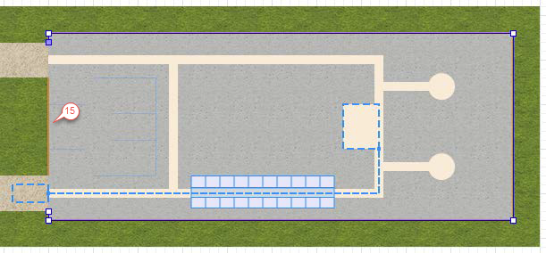
16、运行模型并查看3D动画。将看到模型动画使用圆柱形状来表示托盘，但我们将通过创建定义托盘自定义动画的智能体类型来解决问题。
17、在sourcePallets模块的属性视图的“新智能体”下单击“创建自定义类型”。
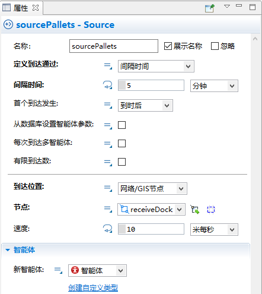
18、在“新建智能体”向导中，执行以下操作：
a.在“新类型名”中输入Pallet。
b.单击下一步。
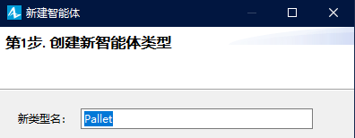
c.在向导的下一页上展开列表中的仓库和集装箱码头部分单击“托盘”。
d.单击完成。
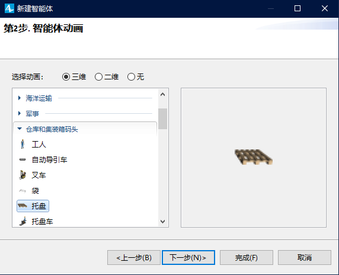
AnyLogic创建托盘智能体类型并打开托盘图，该托盘图将显示在向导中选择的动画。下一步是在托盘动画上添加动画，但首先要放大视图仔细看看托盘。
19、使用工具栏的缩放工具，将图放大到500％，然后向右和向下移动画布以查看轴的原点和托盘动画形状。
放大或缩小视图
AnyLogic的缩放工具栏可让您放大或缩小图形图的视图：
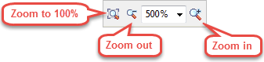
20、执行以下操作以开始在托盘动画之上添加产品动画。
a.在三维物体面板上展开盒子部分。
b.将“盒1关”拖到托盘的左上角。
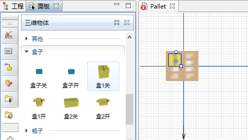
21、由于比托盘大，需将“盒1关”的“附加比例”改为75％。
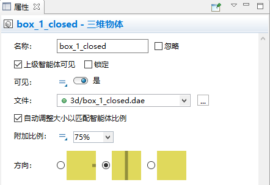
22、在盒子的属性视图中展开位置部分，然后将盒子的“Z”坐标改为2。
这个改变反映是希望在托盘上放置盒子，每个托盘的高度约为2个像素。
23、复制三次盒子来添加三个盒子。要复制该盒子请选择该盒子，然后在拖动盒子时按住CTRL键。
托盘现在有四个关闭的盒子，现在可以通过单击工具栏的缩放到100％按钮将缩放级别更改回100％。
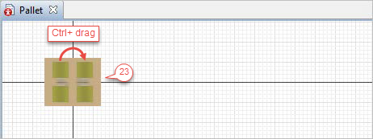
24、返回Main图，如果打开sourcePallets模块的属性，将看到“新智能体”被选为Pallet，该模块将生成Pallet类型的智能体。
25、运行模型，会看到托盘形状已经取代了多色圆柱体。但是如果放大场景，会发现叉车没有运输托盘。我们将通过移动模型的托盘动画来解决这个问题。
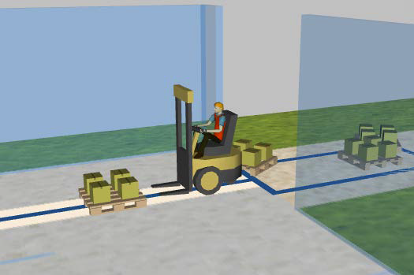
26、在工程视图中，双击ForkliftTruck智能体类型以打开其图，然后将forkliftWithWorker图一个单元格移动到右侧。
动画形状现在位于正确的位置，模型托盘与叉车的叉子对齐。
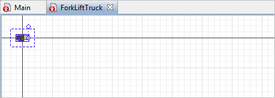
27、打开Main图，在托盘货架的属性视图的“层数”中输入2。
28、在storeRawMaterial模块的属性视图中将“每层上升时间”设为30秒。
29、在pickRawMaterial模块的属性视图中将“每层下降时间”设为30秒。
30、运行模型，将会看到一个有两层的托盘货架。
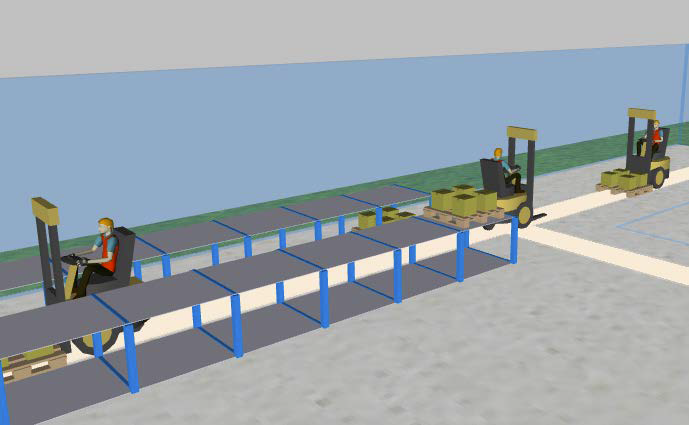
1.4用卡车模拟托盘交付
这一部分中将把提供托盘的卡车添加到作业车间。首先创建一个智能体类型来表示它们。
1、在流程建模库面板上，将智能体类型拖到Main图上。
2、在新建智能体向导中，执行以下操作：
a.在“新类型名”中输入Truck，单击下一步。
b.在下一页上展开列表中的道路运输部分选择卡车。
c.单击完成。
在网络中添加两个元素：卡车将出现的节点以及它们将在接收基座上跟随的路径。
3、打开Main图。
4、在空间标记面板下，单击点节点并将其拖到车道入口。
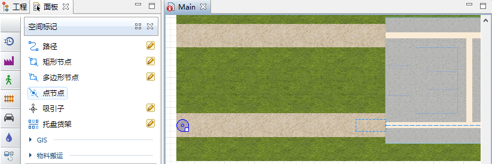
5、将节点命名为exitNode。
6、绘制路径将exitNode连接到receivingDock。
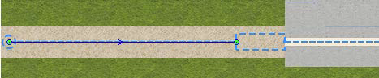
确保所有空间标记元素都连接到一个网络。
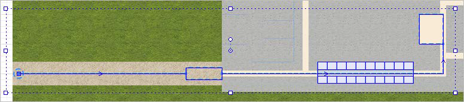
7、创建另一个流程图，通过按以下顺序连接流程建模库模块来定义卡车运动逻辑：
Source - MoveTo - Delay - MoveTo - Sink。
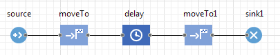
◦Source模块生成卡车。
◦第一个MoveTo模块将卡车移动到作业车间入口。该模块将智能体移动到新位置。如果资源附加到智能体，它们将随之移动。
◦Delay模块模拟托盘卸载。
◦第二个MoveTo模块使卡车离开。
◦sink1模块将卡车从模型中移除。
8、命名Source模块sourceDeliveryTrucks。
9、在sourceDeliveryTrucks模块的属性视图中，执行以下操作以使自定义卡车类型的新智能体以特定速度每小时到达车道入口一次：
a.在“定义到达通过”选择“间隔时间”。
b.在“间隔时间”中输入1，然后在右侧选择“小时”。
c.在“新智能体”中选择“Turck”。
d.在“到达位置”中选择“网络/GIS节点”。
e.在“节点”中选择“exitNode”。
f.在“速度”中输入40，然后在右侧选择“千米每小时”。
10、将第一个MoveTo模块命名为drivingToDock。
11、在drivingToDock模块的属性视图的“节点”中选择“receivingDock”。
12、重命名Delay模块为unloading。
13、在unloading模块的属性视图中执行以下操作：
a.在“类型”中选择“直到调用stopDelay()”。
b.在“智能体位置”中选择“receivingDock”。
操作的持续时间取决于叉车卸载和卸下托盘的速度。当RackStore模块完成存储托盘时会认为此操作已完成，将通过更改Delay模块的类型对此进行建模。
以编程方式控制延迟时间
您通常会为Delay模块的操作指定延迟时间。它可以是固定的持续时间，例如五分钟或产生延迟时间的随机表达式，例如triangular(1,2,6)。还可以通过编程控制操作的持续时间，并在必要时调用相应的函数来停止延迟。如果需要停止在Delay模块中等待的所有智能体，请调用模块的stopDelayForAll()函数。另一个stopDelay(agent)函数用于结束操作并释放指定的智能体。
14、命名第二个MoveTo模块为drivingToExit。
15、在drivingToExit模块的属性视图的“节点”中选择“exitNode”。
模型的两个Source模块生成两种智能体类型：每小时出现的卡车和每五分钟生成的托盘。由于希望在卡车卸载时出现托盘，将更改生成它们的Source模块的到达模式。
控制智能体生成
将“定义到达通过”设为“inject()函数调用”，可以让Source模块以设定的间隔生成智能体。可以通过调用模块的inject(int n)函数在运行时控制智能体的创建。
调用函数时将生成给定数量的智能体，可以用参数（如sourcePallets.inject(12);）设置模块将生成的智能体数。
16、在sourcePallets模块的属性视图中，将“定义到达通过”设为“inject()函数调用”。
17、当卡车进入卸载区时，请执行以下操作以使sourcePallets模块生成托盘：
a.在unloading模块的属性视图中展开行为部分。
b.在“进入时”中输入以下代码：
1 | sourcePallets.inject(16); |
这个Java函数将确保模型每次卡车开始卸载时生成16个托盘。
现在已经将卡车添加到模型中，在模型启动时出现第一辆送货卡车，这样就不必等待一小时的模型时间。
18、在Main的属性视图的行为部分，在“启动时”中输入以下Java函数：
1 | sourceDeliveryTrucks.inject(1); |
模型启动代码
在构建、连接和初始化模型模块之后，模型的启动代码在模型初始化的最后阶段执行。这是一个用于其他初始化和启动智能体活动（如events.1）的位置。在storeRawMaterial模块的属性视图中，展开行动部分在“离开时”中输入以下内容：
1 | if( self.queueSize() == 0 ) |
在这个例子中，self是用来引用它自己storeRawMaterial模块的局部变量。
如果存储队列中没有托盘，则unloading模块的延迟时间结束（换句话说，调用stopDelayForAll()），卡车离开unloading模块并进入下一个流程图模块，即driveExquest。
20、运行模型。
21、如果卡车未正确对齐会如下图所示，请执行以下操作进行修理。
a.在工程树中双击“Truck”智能体类型以打开其图并查看卡车动画图形。
b.在图形编辑器中选择卡车形状，然后使用圆形手柄或形状位置属性视图中的“旋转Z，°”中将卡车旋转至-180度。
这样就改变了卡车的位置，但还需要更改默认设置以确保程序不会再次旋转它。
22、执行以下操作以更改AnyLogic的默认设置：
a.在工程视图中单击Truck。
b.在Truck智能体类型的属性视图中单击箭头以展开移动部分。
c.清除选中的“按照移动旋转动画”。
23、打开Main图。
24、要确保托盘正确放置在receivingDock网络节点中，请打开空间标记面板将 吸引子拖到receivingDock中。让它面对入口。
节点中的吸引子
吸引子允许控制节点内的智能体位置。
•如果节点定义了智能体移动的目标，则吸引子定义节点内的确切目标点。
•如果节点定义了等待位置，则吸引子定义智能体在节点内等待的确切点。
当智能体在节点内等待时，吸引子还定义智能体动画的方向。这里使用吸引子来实现这一特定目的。可以通过将吸引子单独拖动到Main图上来添加吸引子，但如果吸引子形成常规结构，则应使用特殊向导同时添加多个吸引子。该向导提供了几种不同的创建模式以及清除所有吸引子的选项，可以通过单击节点的属性视图中的“吸引子”按钮来显示它。
25、运行模型检查卡车的行为，动画应该能像期望的那样工作。
1.5 数控机床的建模
这一部分将模拟处理原材料的数控机床。首先在标记空间使用点节点定义数控机床位置。
1、将空间标记面板中的点节点拖到作业车间布局上，并将其命名为nodeCNC1。
2、复制此节点以标记第二台数控机床的空间，AnyLogic将命名这个节点为nodeCNC2。

我们需要创建将这两个节点连接到网络的路径，叉车需要它们才能到达数控机床。
3、在空间标记面板上，单击路径元素并绘制路径，如下图所示。要将路径连接到点节点，请单击点节点的中心。
注意：确保绘制的路径将nodeCNC1和nodeCNC2连接到网络。可以通过双击来选择它来测试路径的连接。如果路径连接到网络，会在其端点周围显示青色高光。
数控机床是一种资源，将通过创建资源类型并使用ResourcePool模块来定义资源池，将其添加到模型中。
4、在流程建模库面板上，单击ResourcePool模块并将其拖动到Main图上。
5、在ResourcePool模块的属性视图中，执行以下操作：
a.“名称”中输入cnc。
b.“资源类型”中选择“静态”。
随着资源池的完成就已准备好创建新的资源类型。
6、在“新资源单元”下单击“创建自定义类型”链接。
7、在“新建智能体”向导中，执行以下操作：
a.在“新类型名”中输入CNC。
b.单击下一步。
c.在下一页上展开数控机床部分，然后选择数控立式加工中心2状态1。
d.单击完成。
8、关闭新的CNC类型图并返回Main图。
9、在cnc的ResourcePool模块的属性视图中执行以下操作将模型的两台数控机器放置在由点节点nodeCNC1和nodeCNC2定义的位置。
a.在“容量定义”中单击“通过归属地位置”。
“通过归属地位置”设置的资源数等于您为此资源池设置的节点数。
b.单击按钮，然后将nodeCNC1和nodeCNC2添加到“归属地位置（节点）”中。
添加节点后，列表应类似于下图。
现在准备修改模型来定义托盘行为的流程图，方法是添加一个可以占用数控机床的Seize模块。之后的Delay模块将模拟数控机床对原材料的处理，Release模块将释放数控机床，以便它可以处理下一个托盘的原材料。
注意模型流程图已经有一个pickRawMaterial模块，可以模拟将托盘送到数控机床的移动资源（叉车）。
10、在定义托盘行为的流程图中，将pickRawMaterial和sink模块拖到右侧，为新模块腾出空间。
11、拖动流程建模库面板中的Seize模块，在rawMaterialinStorage模块后将其插入到流程图中。
12、在Seize模块的属性视图中，执行以下操作：
a.在“名称”中输入seizeCNC。
b.在“资源集”下单击按钮，然后单击“cnc”。
完成此步骤可确保Seize模块将从cnc资源池中获取一个资源。
13、在pickRawMaterial流程图模块的属性视图中，执行以下操作：
a.在“目的地是”中选择“获取的资源单元”。
b.在“资源”中选择“cnc”。
该模块将模拟托盘如何运输到缉获的数控机床而不是叉车的停车区。
14、执行以下操作以模拟数控机床的原材料加工：
a.添加一个Delay模块，将它放在pickRawMaterial模块后，并命名为processing。
15、在Delay模块的属性视图中，执行以下操作：
a.在“延迟时间”中输入triangular(2,3,4)并在右侧选择“分钟”。
b.选中“最大容量”使机器能处理多个托盘。
到达Delay模块的每个智能体群必须拥有模型的两台数控机床。
16、将流程建模库面板的Release模块拖到流程图上，然后将其放在processing模块后。
17、命名此模块为releaseCNC。
运行模型将看到在正确模拟过程的同时，3D动画在CNC机器形状的中间绘制托盘。当数控机床正在处理的托盘和动画位置都使用相同的点节点时，会发生这种情况。要解决这个问题，需要将数控机床向右移动并旋转它以面向托盘。
18、在工程视图中，双击CNC智能体类型以打开其图表。
19、将动画移动到右侧，使用圆形手柄旋转形状或将图形的“旋转”设为90度。
我们准备使用两个类似的3D动画形状来为CNC机器设置动画：一个形状代表闲置机器，另一个代表机器正在处理原材料。将为每个形状的可见性属性定义动态值，这将允许模型使用CNC机器的状态来确定模型在运行时将显示的形状。
20、执行以下操作以更改CNC动画形状的可见性设置：
a.选择CNC动画形状。
b.将鼠标悬停在可见性标签旁边显示的静态参数图标上，然后单击“动态值”。
该图标将更改为动态属性图标和一个框，可以在其中定义动态表达式。
c.在框中输入isBusy()。
该函数在资源繁忙时会返回true。在例子中，该函数将在CNC机器处理原材料时显示3D动画形状。
动态属性
为属性的动态值定义表达式时，模型将在运行时期间重新评估每个动画帧上的表达式，然后使用结果值作为属性的当前值。为形状的位置、高度、宽度或颜色提供动态值允许AnyLogic用户为其模型设置动画。
如果未输入动态值属性将在整个仿真过程中保留默认静态值。
•流程图模块可以具有：
◦静态参数，在整个模拟过程中保持相同的值，除非set_parameterName(new value)函数对其进行更改。
◦动态参数，每次新智能体进入模块时，其值都会重新评估。
◦代码参数，允许定义将在流程图模块中的关键时刻执行的操作，例如“进入时”或“离开时”行为。在大多数情况下可以在行为部分中找到代码参数。
•参数图标上的小三角形表示可以单击图标并在静态值编辑器和可以输入值的动态重新评估表达式的字段之间切换。
21、执行以下操作以添加一个仅在数控机器不处理原材料时才可见的动画形状。
a.打开三维物体面板。
b.展开数控机床区域，将“数控立式加工中心2状态2”形状拖到CNC图上。
c.旋转形状并将其直接放在第一个动画图形的顶部。
d.将“可见”切换到动态值编辑器，然后输入isIdle()作为形状的“可见性”的动态表达式。
22、展开三维对象面板的人部分，将工人拖到CNC图上。
23、运行模型并观察过程。将看到叉车如何将货盘运送到数控机床进行加工。还可以看到CNC机器的动画，根据其状态改变3D形状。
这样就完成了一个简单的模型，模拟了小型加工车间的制造和运输过程。现在已具备AnyLogic资源的基本知识并了解了如何使用它们。您还知道如何使用从流程建模库模块构造的流程图来定义流程逻辑。下一步的建模目标可以是模拟带有成品零件的托盘如何移动到装运区域的另一个存储区域，直到它们装运为止。这样已经使用了构建此过程部分所需的模块，您可能还希望尝试添加自己的逻辑，可在后续研究中完成。